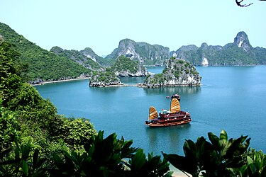
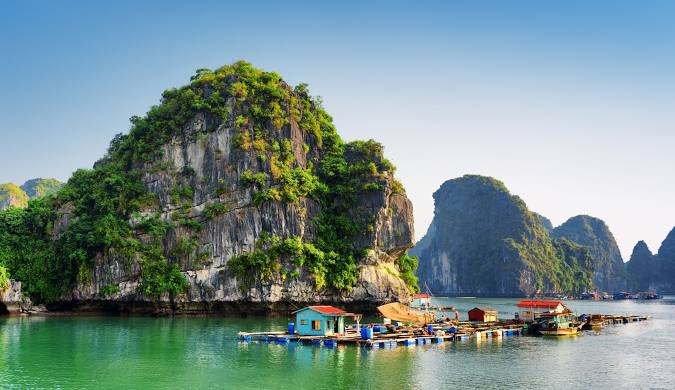

¡Vietnam es un destino turístico fascinante con una rica historia, impresionante paisaje natural y una cultura vibrante! Aquí tienes algunos puntos destacados sobre el turismo en Vietnam:
-
Ciudades principales: Hanoi, la capital, es conocida por su casco antiguo, el lago Hoan Kiem y el mausoleo de Ho Chi Minh. Ho Chi Minh City (anteriormente Saigón) es famosa por sus bulliciosos mercados, la arquitectura colonial y la vida nocturna animada.
-
Bahía de Ha Long: Este es uno de los destinos turísticos más icónicos de Vietnam, famoso por sus impresionantes formaciones rocosas, cuevas y aguas color esmeralda. Un crucero por la bahía es una experiencia inolvidable.
-
Hoi An: Una ciudad histórica bien conservada, famosa por sus calles empedradas, casas antiguas y linternas de colores. Hoi An es conocida por su cultura culinaria, su artesanía y sus playas cercanas.
-
Hue: La antigua capital imperial de Vietnam, Hue es famosa por su Ciudadela Imperial, sus tumbas reales y su rica historia. Es un destino importante para los amantes de la historia y la cultura.
Delta del Mekong: Esta región del sur de Vietnam es conocida por sus paisajes de ensueño, sus mercados flotantes y sus pueblos pintorescos. Los visitantes pueden explorar los canales en barco y experimentar la vida cotidiana en el delta.
|
 |
|  |
-
Sapa: Ubicada en las montañas del norte, Sapa es famosa por sus terrazas de arroz, sus paisajes de montaña espectaculares y sus diversas comunidades étnicas. Es un destino popular para el trekking y el ecoturismo.
-
Gastronomía: La comida vietnamita es deliciosa y variada, con platos como pho (sopa de fideos), banh mi (bocadillo vietnamita), bun cha (brochetas de cerdo con fideos) y muchas más delicias culinarias que no te puedes perder.
-
Cultura y festivales: Vietnam tiene una rica tradición cultural, con festivales coloridos como el Tet (Año Nuevo Lunar), el festival de linternas en Hoi An y el festival de Tet Trung Thu (Fiesta de la Luna).
-
Playas: Vietnam cuenta con hermosas playas a lo largo de su costa, como Nha Trang, Da Nang y Phu Quoc, ideales para relajarse, hacer snorkel y disfrutar del sol y la arena.
-
Preservación histórica: Además de sus atracciones naturales, Vietnam también ofrece la oportunidad de aprender sobre su historia, incluidos los conflictos como la Guerra de Vietnam, a través de museos, monumentos y sitios históricos
|